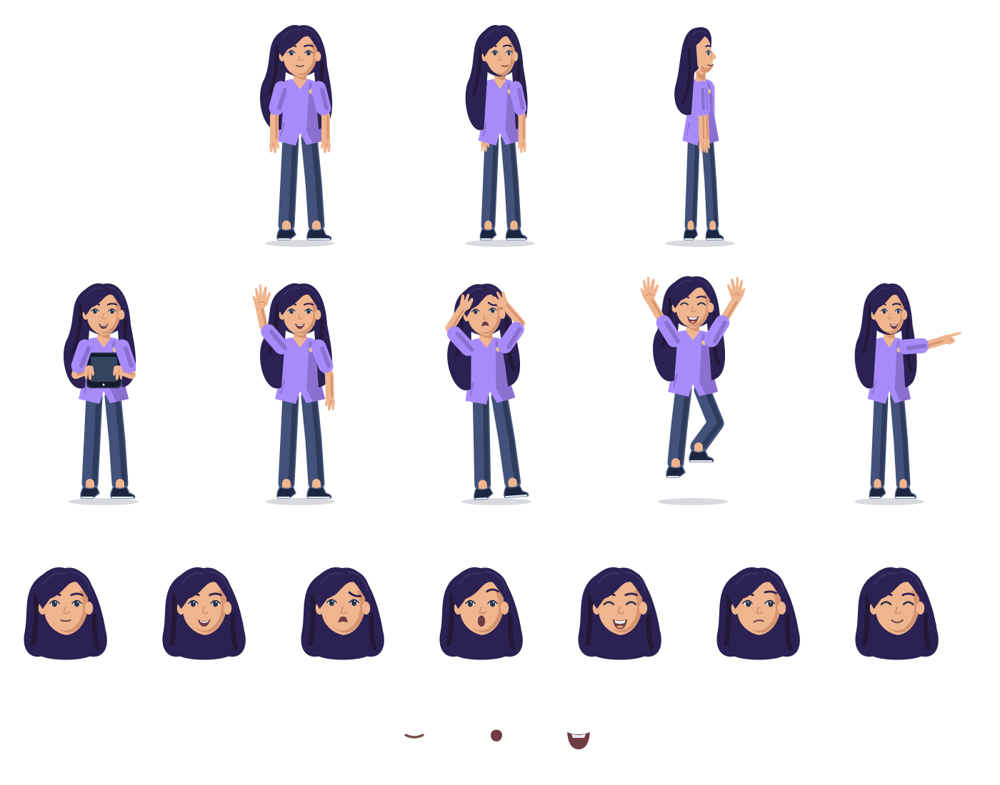
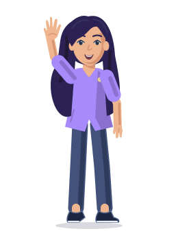
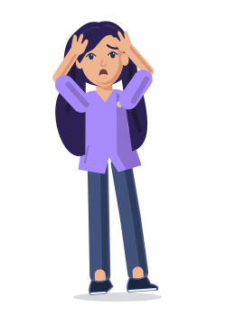
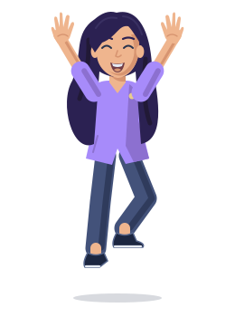
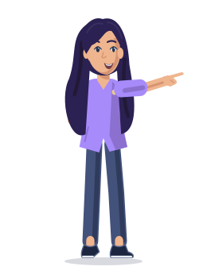
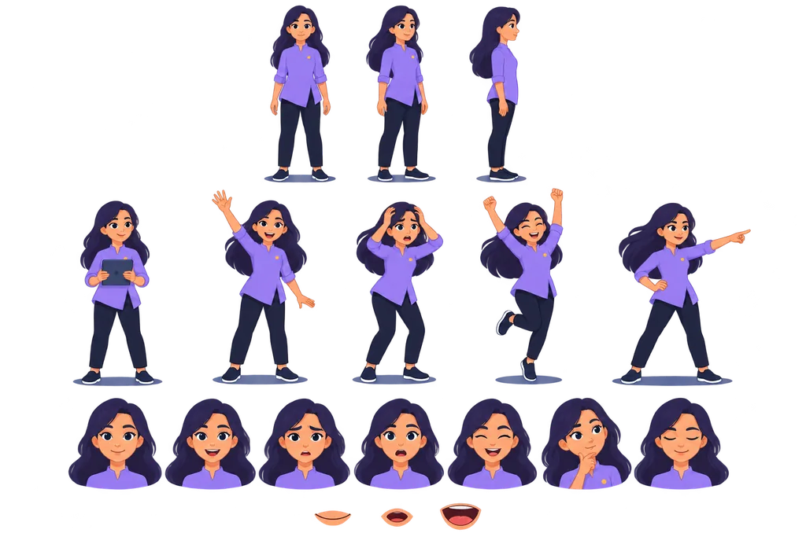

Maya · source art
The reference is a raster image. The separate SVG sheet contains editable vector groups.
Editable SVG sheet
Open SVG
Small-size pose check




Generated transparent reference
